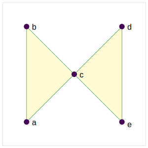
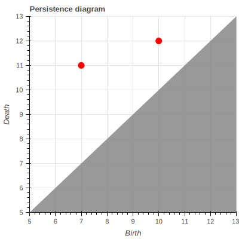

Spectral relaxations of Persistence Invariants
Relaxing the rank invariant for parameterized settings
\(\dagger\) Khoury College of Computer Sciences, Northeastern University
\(\ddagger\). Department of Mathematics and Khoury College of Computer Sciences, Northeastern University
Vectorizing diagrams
There are many mappings from \(\mathrm{dgm}\)’s to function spaces (e.g. Hilbert spaces)
- Persistence Landscapes (Bubenik 2020)

\[ \lambda(k, t) = \sup \{ h \geq 0 \mid \mathrm{rank}(H_p^{i-h} \to H_p^{i+h}) \geq k \} \]
Vectorizing diagrams
There are many mappings from \(\mathrm{dgm}\)’s to function spaces (e.g. Hilbert spaces)
- Persistence Landscapes (Bubenik 2020)
- Persistence Images (Adams et al. 2017)

\[ \mathbb{R} \]
Optimizing persistence
There’s also been much work on optimizing persistence quantities
What if we could have it all…
- Vectorize persistence information
- Optimize persistence invariants
- Make persistence viable in ML contexts
… and avoid computing diagrams?
In this talk we introduce a spectral-relaxation of the rank invariant that:
- is smooth + differentiable on \(\mathbf{S}_+\) and semismooth on \(\mathbb{R}^{n \times n}\)
- \((1{\textstyle -}\epsilon)\) approximates \(\beta_p^{i,j}\) for any \(\epsilon > 0\)
- Vectorizes the non-harmonic spectra of Laplacian operators
- Is computable solely from matrix-vector products
Application: parameterized families
Consider a 1-parameter family of simplicial complexes:
\[\{ \; \mu_p^R(K, \, f_\alpha) \triangleq \mathrm{card}\big(\, \left.\mathrm{dgm}(K, \, f_\alpha) \right|_{R} \, \big) : \alpha \in \mathcal{A} \; \}\]
Why not use diagrams?
Pro: Diagrams are stable, well-studied, and information rich.
Con: Only competitive algorithm to produce a diagram is reduction algorithm:
\[ \partial(K_\bullet) \mapsto R = \partial V \]


Maintaining the \(R = \partial V\) decomposition “across time” \(\implies\) huge memory bottleneck
Why not use diagrams?
Pro: Diagrams are stable, well-studied, and information rich.
Con: Only competitive algorithm to produce a diagram is reduction algorithm:
\[ \partial(K_\bullet) \mapsto R = \partial V \]
Maintaining the \(R = \partial V\) decomposition “across time” \(\implies\) huge memory bottleneck
Why prefer the rank invariant?
There is a duality between diagrams its associated rank function:
\[ \mathrm{dgm}_p(\, K_\bullet, \, f \, ) \triangleq \{ \, ( \, i, j \,) \in \Delta_+ : \mu_p^{i,j} \neq 0 \, \} \; \cup \; \Delta \]
\[\text{where: } \quad \mu_p^{i,j} = \left(\beta_p^{i,j{\small -}1} - \beta_p^{i,j} \right) - \left(\beta_p^{i{\small -}1,j{\small -}1} - \beta_p^{i{\small -}1,j} \right) \quad \]
“Fundamental Lemma of Persistent Homology” shows diagrams characterize their ranks \[\beta_p^{k,l} = \sum\limits_{i \leq k} \sum\limits_{j > l} \mu_p^{i,j}\]
- Persistence measures (Chazal et al. 2016) extend (1,2) naturally when \(\mathbb{F} = \mathbb{R}\)
- Stability in context of multidimensional persistence (Cerri et al. 2013)
- Mobius inversions[], etc.
Overview
- Introduction & Motivation
- Deriving the relaxation
Revisiting the PH rank computation
\[ \beta_p^{i,j} : \mathrm{rank}(H_p(K_i) \to H_p(K_j))\]
\(\quad\quad\quad\quad\beta_p^{i,j} = \mathrm{dim} \big( \;\mathrm{Ker}(\partial_p(K_i))\; / \;\mathrm{Im}(\partial_{p+1}(K_j)) \; \big )\)
\(\quad\quad\quad\quad\hphantom{\beta_p^{i,j} }= \mathrm{dim}\big(\; \mathrm{Ker}(\partial_p(K_i)) \; / \; (\mathrm{Ker}(\partial_p(K_i)) \cap \mathrm{Im}(\partial_{p+1}(K_j))) \; \big )\)
\(\color{blue}{\quad\quad\quad\quad\hphantom{\beta_p^{i,j} }=\mathrm{dim}\big(\;\mathrm{Ker}(\partial_p(K_i)) \; \big)}\) \(-\) \(\color{red}{\mathrm{dim}\big( \; \mathrm{Ker}(\partial_p(K_i)) \cap \mathrm{Im}(\partial_{p+1}(K_j))\;\; \big)}\)
Rank-nullity yields the left term: \[ \mathrm{dim}\big(\mathrm{Ker}(\partial_p(K_i))\big) = \lvert C_p(K_i) \rvert - \mathrm{dim}(\mathrm{Im}(\partial_p(K_i))) \]
Computing the right term more nuanced:
- Gaussian elimination[^1], pseudo-inverse[^2], projectors[^3], etc.
- Reduction algorithm[^4], Persistent Laplacian Schur complement[^5]
Key Observation
The structure theorem asserts 1-parameter persistence modules decompose in an essentially unique way into indecomposables, which can be used to show:
\[ R[i,j] \neq 0 \Leftrightarrow \mathrm{rank}(R^{i,j}) - \mathrm{rank}(R^{i\texttt{+}1,j}) + \mathrm{rank}(R^{i\texttt{+}1,j\text{-}1}) - \mathrm{rank}(R^{i,j\text{-}1}) \neq 0 \] \[ \begin{equation} \implies \mathrm{rank}(R^{i,j}) = \mathrm{rank}(\partial^{i,j}) \end{equation} \]
Often used to show correctness of reduction, but far more general, as it implies:
\[ \beta_p^{i,j}(K_\bullet) = \lvert C_p(K_i) \rvert - \mathrm{rank}(\partial_p^{1,i}) - \mathrm{rank}(\partial_{p+1 }^{1,j}) + \mathrm{rank}(\partial_{p+1}^{i + 1, j} ) \]
\[ \mu_p^{R}(K_\bullet) = \mathrm{rank}(\partial_{p+1}^{j + 1, k}) - \mathrm{rank}(\partial_{p+1}^{i + 1, k}) - \mathrm{rank}(\partial_{p+1}^{j + 1, l}) + \mathrm{rank}(\partial_{p+1}^{i + 1, l}) \]
Corollary (Bauer et al. 2022): Any algorithm that preserves the ranks of the submatrices \(\partial^{i,j}\) for all \(i,j \in \{ 1, \dots, n \}\) is a valid barcode algorithm.
Example:
Example:

\[\mu_p^{R}(K_\bullet) = \mathrm{rank}(\partial_{p+1}^{j + 1, k}) - \mathrm{rank}(\partial_{p+1}^{i + 1, k}) - \mathrm{rank}(\partial_{p+1}^{j + 1, l}) + \mathrm{rank}(\partial_{p+1}^{i + 1, l})\]
A spectral relaxation
We can express both \(\beta_p^{i,j}(K_\bullet)\) and \(\mu_p^{R}(K_\bullet)\) with ranks of unfactored matrices \[ \mu_p^{R}(K_\bullet) = \mathrm{rank}(\partial_{p+1}^{j + 1, k}) - \mathrm{rank}(\partial_{p+1}^{i + 1, k}) - \mathrm{rank}(\partial_{p+1}^{j + 1, l}) + \mathrm{rank}(\partial_{p+1}^{i + 1, l}) \]
\[ \begin{align} \mathrm{rank}(X) &= \lVert \mathbf{\sigma} \rVert_0, \quad \quad & X = U \mathrm{Diag}(\mathbf{\sigma})V^T \\ & = {\textstyle \sum_{i=1}^{n}} \, \mathrm{sgn}_+(\sigma_i), \quad \quad &\mathrm{sgn}_{+}(x) = \begin{cases} 1 & \text{if } x > 0 \\ 0 & \text{otherwise} \end{cases} \\ & \approx {\textstyle \sum_{i=1}^n} \, \phi(\sigma_i, \epsilon), \quad \quad &\phi(x, \epsilon) \triangleq \int\limits_{-\infty}^x\hat{\delta}(z, \epsilon) dz \\ &= \lVert \Phi_\epsilon(X) \rVert_\ast, \quad \quad &\Phi_\epsilon(X): \mathbb{R}^{n \times m} \to \mathbb{R}^{n \times m} \end{align} \]
where \(\Phi_\epsilon(X)\) is a Löwner operator when \(\phi\) is operator monotone
A spectral relaxation: intuition

A spectral relaxation: intuition
\[ \begin{align} \mu_p^{R}(K_\bullet) &= \mathrm{rank}(\partial_{p+1}^{j + 1, k}) - \, \dots \, + \mathrm{rank}(\partial_{p+1}^{i + 1, l}) \\ &\approx \lVert \Phi_\epsilon(\partial_{p+1}^{j + 1, k}) \rVert_\ast - \, \dots \, + \Phi_\epsilon(\partial_{p+1}^{i + 1, l}) \end{align} \]
(Bi, Han, and Pan 2013) show that for any smoothed Dirac delta function1 \(\hat{\delta}\) and differentiable operator monotone function \(\phi: \mathbb{R}_+ \times \mathbb{R}_{++} \to \mathbb{R}_+\), we have:
- (\(\epsilon\)-close) \(\quad\quad\) \(0 \leq \mathrm{rank}(X) - \lVert \Phi_\epsilon(X) \rVert_\ast \leq c(\hat{\delta})\)
- (Monotonicity) \(\quad\quad\) \(\lVert \Phi_{\epsilon}(X) \rVert_\ast \geq \lVert \Phi_{\epsilon'}(X) \rVert_\ast\) for any \(\epsilon \leq \epsilon'\)
- (Smooth) \(\quad\quad\) \(\lVert \Phi_\epsilon(X) \rVert_\ast\) Lipshitz continuous, semismooth on \(\mathbb{R}^{n \times m}\)
- (Differentiable) Continuously differentiable on \(\mathbf{S}_+\)
- (Computable) Differential \(\partial \lVert \Phi_\epsilon(\cdot) \rVert_\ast\) has a closed-form solution
Generalizes many rank relaxations used in compressed sensing and \(\ell_1\) minimization
\(\alpha\)-parameterized boundary matrices
Suppose we have an \(\alpha\)-parameterized filtration \((K, f_\alpha)\) where \(f_\alpha : K \to \mathbb{R}_+\) satisfies: \[ \begin{align} f_\alpha(\tau) \leq f_\alpha(\sigma) \quad \text{ if } \tau \subseteq \sigma \quad \forall \tau,\sigma \in K \end{align} \]
We turn 
Rank Invariances
\(\mathrm{rank}\) is invariant to many things:
\[ \begin{align} \mathrm{rank}(A) &\triangleq \mathrm{dim}(\mathrm{Im}(A)) & \\ &\equiv \mathrm{rank}(A^T) & \text{(adjoint)} \\ &\equiv \mathrm{rank}(A^T A) & \text{(inner product)} \\ &\equiv \mathrm{rank}(A A^T) & \text{(outer product)} \\ &\equiv \mathrm{rank}(S^{-1}AS) & \text{(change of basis)} \\ &\equiv \mathrm{rank}(O^T A O) & \text{(rotations)} \\ &\equiv \mathrm{rank}(P^T A P) & \text{(permutation)} \\ &\equiv \dots & \text{etc.} \end{align} \]
Q: Can we exploit some of these?
Rank test 2
\[\mathrm{rank}(A) \triangleq \mathrm{dim}(\mathrm{Im}(A))\]
\[\mathrm{rank}(A) \triangleq \mathrm{dim}(\mathrm{Im}(A))\]
\[\mathrm{rank}(A) \triangleq \mathrm{rank}(\mathrm{Im}(A))\]
Permutation Invariance
Consider the setting where \(f_\alpha : \mathbb{R} \to \mathbb{R}^N\) is an \(\alpha\)-parameterized filter function:
\[ \mu_p^R(\, f_\alpha \, ) = \{ \mu_p^R(K_\bullet^\alpha) : \alpha \in \mathbb{R} \}\]
Difficult to compute \(R_\alpha = \partial_\alpha V_\alpha\) for all \(\alpha\) as \(K_\bullet = (K, f_\alpha)\) is changing constantly…
\[ \mathrm{rank}(\partial_p(K_\bullet)) \equiv \mathrm{rank}(P^T \partial_p(K) P) \] \[ \mathrm{rank}(\partial_p(K_\bullet)) \equiv \mathrm{rank}(W \mathrm{sgn}(\partial_p(K)) W) \]
Thus we may decouple \(f_\alpha\) and \(K\) in the computation:
\[ \begin{align*} \mu_p^{R}(K,f_\alpha) &\triangleq \mathrm{rank}\big(\,\hat{\partial}_{q}^{j + \delta, k}\,\big) - \; \dots \; + \mathrm{rank}\big(\, \hat{\partial}_{q}^{i + \delta, l}\,\big) \\ &\equiv \mathrm{rank}\big(\,V_p^j \circ \partial_{q} \circ W_q^k \,\big) - \; \dots \; + \mathrm{rank}\big(\,V_p^{i+\delta} \circ \partial_{q} \circ W_q^l \,\big) \end{align*} \]
where the entries of \(V\), \(W\) change continuously w/ \(\alpha\), while \(\partial_q\) remains fixed…
Combinatorial Laplacian
Recall \(\mathrm{rank}(A) = \mathrm{rank}(A^T A) = \mathrm{rank}(A A^T)\)
For boundary matrices, these matrices translate into up- and down- Laplacians:
\[ \Delta_p = \partial_{p+1} \partial_{p+1}^T + \partial_{p}^T \partial_{p+1} \]
Thus: \[\begin{align} \mathrm{rank}\big(\,V_p^j \circ \partial_{q} \circ W_q^k \,\big) \\ = \mathrm{rank}(L_{\ast, p}^{j,k}) + \dots - \mathrm{rank}(L_{\ast, p}^{j,k}) \end{align} \]
“weight function” is 1-to-1 with scalar product on cochain groups \(C^p(K, \mathbb{R})\)
Summary: We can obtain \(\mu_p^R(K, f_\alpha)\) for varying \(\alpha\) by using thresholded versions of \(f_\alpha\) as scalar-products
Summary of relaxation
Our relaxation can be summarized as follows:
\[ \begin{align} \mu_p^R(K, \, f_\alpha) &\triangleq \mathrm{card}\big(\, \left.\mathrm{dgm}(K, \, f_\alpha) \right|_{R} \, \big) \\ &\equiv \mathrm{rank}(\partial_{p+1}^{\ast}) - \, \dots \, + \mathrm{rank}(\partial_{p+1}^{\ast}) \\ &= \mathrm{rank}(\partial_{p+1}^{\ast} \circ (\partial_{p+1}^{\ast})^T) - \, \dots \, + \mathrm{rank}(\partial_{p+1}^{\ast}) \\ &= \mathrm{rank}(L_p^{\ast}(f_\alpha^\ast)) - \, \dots \, + \mathrm{rank}(L_p^{\ast}(f_\alpha^\ast)) \\ &\approx \lVert \Phi_{\epsilon}(L_p^{\ast}(f_\alpha^\ast)) \rVert_\ast \\ & \Leftrightarrow \langle \; f,\, g \; \rangle_{\alpha} \text{ on } C^{p+1}(K) \end{align} \]
That is,
Overview
- Introduction & Motivation
- Diagram vectorization and optimization
- The need to avoid computing diagrams
- Duality between rank function and diagrams
- Derivation of relaxation
- Rank approximation w/ Dirac delta
- Spectral connection via Löwner operators
- Laplacian connection via inner products
- Experiments
- Codensity example
- Shape signature example
- Conclusion & Future Work
References
Spectral relaxations of persistent rank invariants